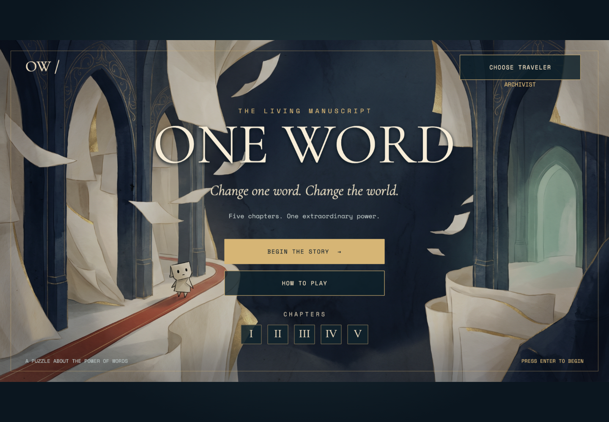
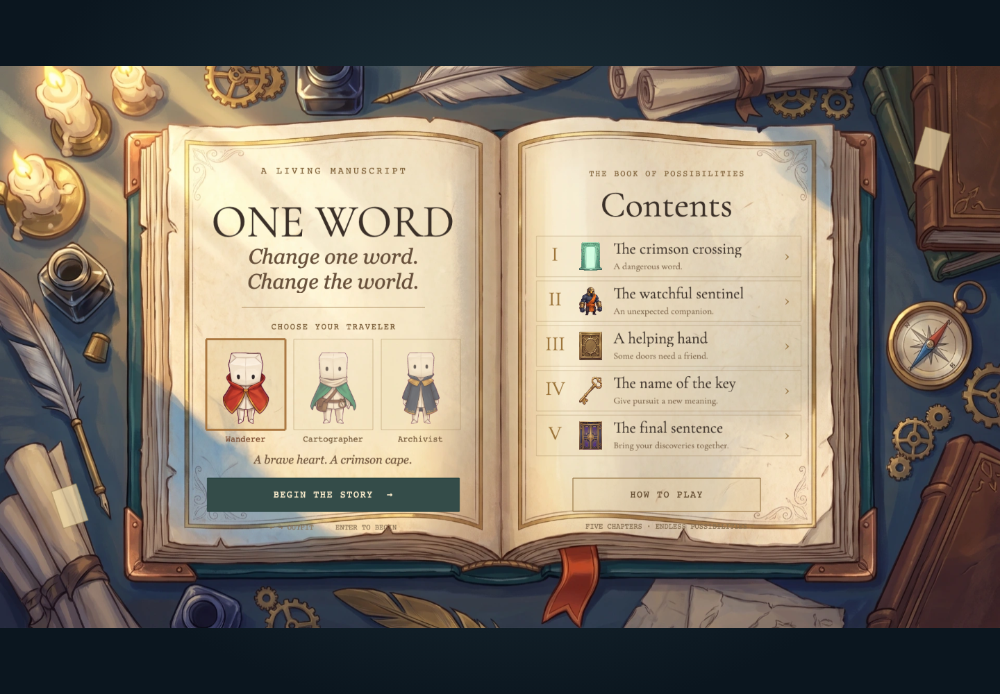
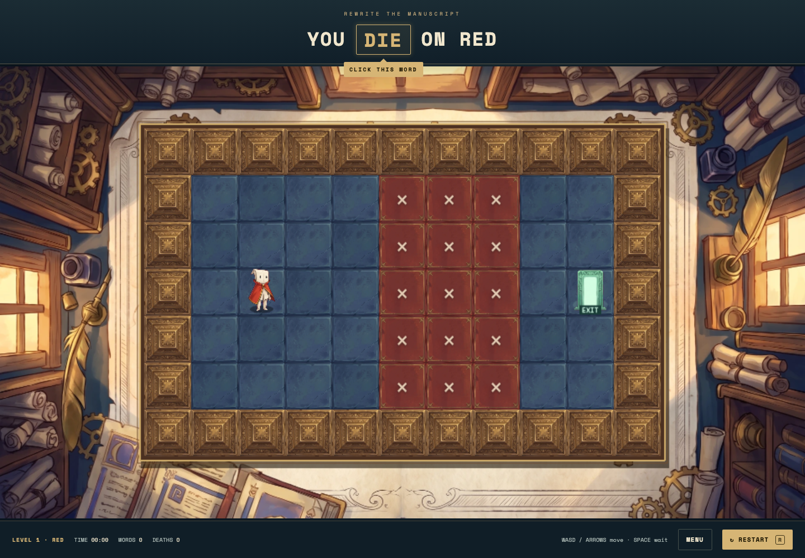
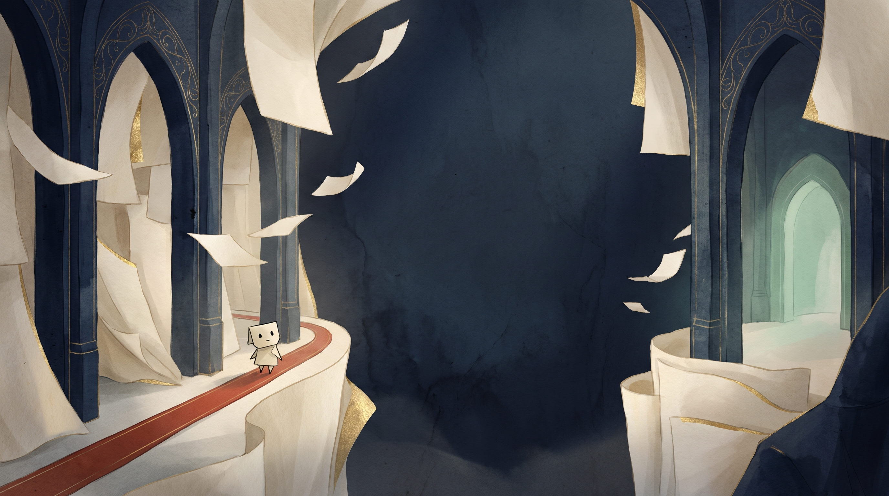
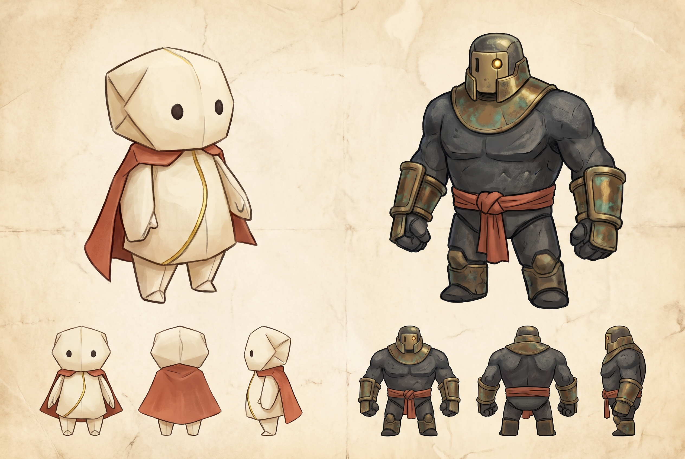
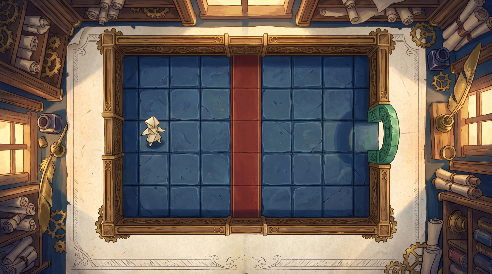

06 / Accueil retenu — composition atmosphérique d’origine, rendu net et garde-robe séparée.
05 / Exploration du livre vivant — variante non retenue. L’accueil atmosphérique original a été restauré, avec un sélecteur séparé pour les trois tenues animées.
04 / Version jouable détaillée — véritables sprites transparents, tuiles peintes, décor de scriptorium. Cartes et règles originales conservées.
01 / Illustration d’accueil — intégrée au menu jouable. Le centre reste calme pour accueillir le titre.
Une matière pour chaque intention.
ENCRE · 111D28PAPIER · F0E6CDRÉÉCRITURE · D6B575VERMILLON · DE6256SORTIE · 8FCBB3

02 / Personnages — recherche de silhouettes et de matières. Planche de référence utilisée pour générer les sprites désormais intégrés au jeu. Le joueur dispose désormais de trois tenues et de sprites directionnels animés. La sentinelle conserve sa pose illustrée.

03 / Scriptorium — référence d’ambiance. Cette illustration n’est pas la carte jouable : sa grille diffère du niveau original.